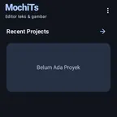
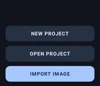
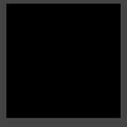
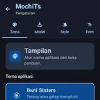
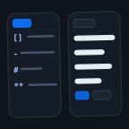
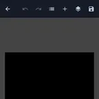
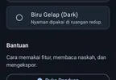

Typeset komik lebih cepat, langsung dari Android.
Impor halaman, bersihkan balon, isi balon dari Script TL, lalu ekspor. Panduan ini menunjukkan setiap langkah dengan bahasa yang mudah diikuti.

Bedanya typeset. Geser untuk melihat.
Panel kiri memuat teks mentah dari terjemahan asing di atas scan. Geser gagangnya: hasil typeset berbahasa Indonesia — balon dibersihkan lewat Erase, isian ditata di tab Text, Font, dan Effect.
- 1Teks asing dihapus. Alat Erase memakai area seleksi (brush, lasso, magic wand) lalu Telea atau LaMa menutup latar.
- 2Isian dari Script TL. Teks hasil terjemahan ditata ulang di tab Text, Font, dan Effect — ukuran, jarak baris, warna.
- 3SFX digambar ulang. Huruf suara asing dibersihkan dan diganti versi bahasa Indonesia.
Kedua panel di atas ini ilustrasi contoh, digambar ulang dari alur aslinya. Screenshot asli aplikasi ada di hero dan tiap bab.
Tiga langkah ke halaman jadi.
Alur yang sama dipakai untuk satu halaman latihan maupun satu chapter penuh. Semua tersimpan dalam satu proyek — berhenti kapan saja, lanjutkan nanti.
Impor halaman
Pilih gambar dari galeri, atau impor satu ZIP berisi banyak halaman sekaligus. Subfolder di ZIP otomatis menjadi folder proyek.
Bersihkan dan isi teks
Hapus teks asing dengan area seleksi (Telea/LaMa), lalu isi balon dari Script TL. Atur huruf, spasi, dan efek di tab yang sama.
Simpan hasilnya
Ekspor sebagai PNG, JPEG, atau WEBP. File proyek .mts masih bisa dibuka lagi untuk mengedit kapan pun.
Tujuh bab, satu alur kerja.
Baca berurutan bila baru mulai, atau langsung buka bab yang sedang kamu butuhkan.

Mulai Pasang aplikasi, buat proyek pertama, dan kenali layar editor. 02
Folder & ZIP Rapikan proyek per judul dan impor satu chapter dalam sekali jalan. 03
Teks & spasi Huruf, warna, efek, clipping mask, dan cara membersihkan balon. 04
Script TL Ubah naskah terjemahan menjadi daftar balon yang rapi. 05
Tester Coba naskah dan pemisah halaman di browser, tanpa memasang aplikasi. 06
Ekspor Simpan sebagai PNG, JPEG, WEBP, atau file proyek yang bisa diedit lagi. 07
FAQ Jawaban singkat untuk masalah yang paling sering muncul.Uji Script TL tanpa membuka aplikasi.
Tempel naskahmu di kotak kiri; alurnya berjalan sendiri di browser dan menampilkan struktur halaman.
Buka proyek pertamamu, tanpa akun.
Panduan ini ditulis untuk penerjemah dan typesetter yang ingin bekerja cepat di Android.
Baca bab 01 Terjemahan & typeset dalam satu alur